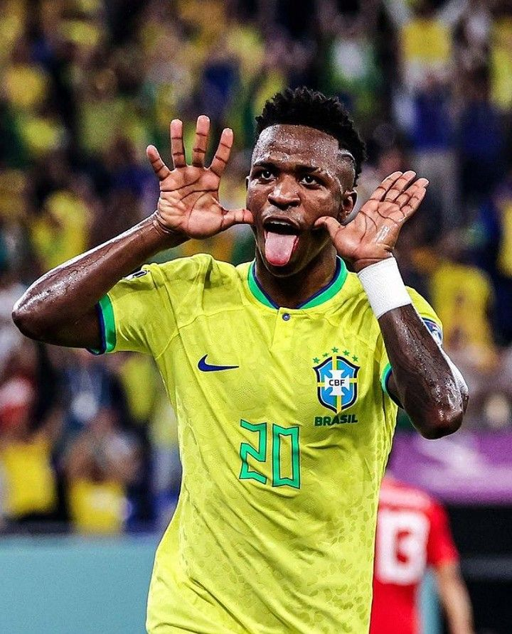
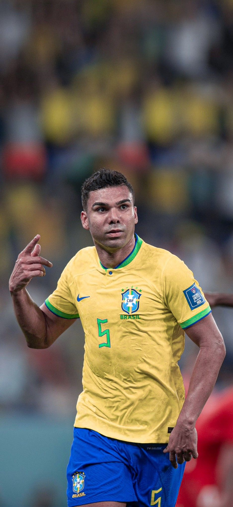

Neymar Jr.
Em sua última dança em Copas do Mundo, o camisa 10 assume o papel de líder técnico e mentor da nova geração de craques. Atuando como um autêntico meia-armador (camisa 10 clássico), Neymar dita o ritmo do jogo, distribui assistências geniais e controla a posse de bola no ataque, sendo a mente criativa por trás das principais jogadas ofensivas da Seleção Brasileira.
Endrick
A grande realidade do ataque brasileiro chega à sua primeira Copa do Mundo unindo uma força física impressionante a um faro de gol implacável. Atuando como o homem de referência na frente ou flutuando em velocidade, o jovem atacante se destaca pela explosão no arranque, finalizações potentes de perna esquerda e pela personalidade de um veterano para decidir grandes jogos.

Matheus Cunha
Vivendo a melhor fase de sua carreira no futebol inglês e consolidado sob o comando de Carlo Ancelotti, o atacante traz dinamismo puro ao ataque da Seleção. Conhecido por sua incrível versatilidade tática, Matheus Cunha combina a entrega física na marcação pressão com uma enorme inteligência para se movimentar fora da área, abrir espaços para os pontas e servir os companheiros com assistências precisas.

Vinícius Jr.
O principal protagonista do ataque brasileiro chega à Copa do Mundo no auge de sua maturidade futebolística. Partindo da ponta esquerda, Vini Jr. desestabiliza qualquer linha defensiva com seus dribles imprevisíveis em velocidade máxima, arrancadas rumo à área e uma evolução avassaladora na tomada de decisão e nas finalizações, sendo a maior arma de escape e gol da Seleção.
Alisson
Consolidado como um dos maiores goleiros da história do futebol brasileiro, Alisson traz uma sensação absoluta de segurança para a meta da Seleção em mais uma Copa do Mundo. Seu grande diferencial é o senso de posicionamento impecável, que faz defesas difíceis parecerem fáceis, além de uma frieza extrema no um contra um e uma excelente qualidade na saída de bola com os pés.

Casemiro
A grande âncora do meio-campo brasileiro traz toda a sua experiência e liderança para a proteção da defesa na Copa do Mundo. Casemiro é o equilíbrio perfeito do time, destacando-se pelo poder de marcação implacável, desarmes precisos e excelente leitura de jogo para cortar os ataques adversários, além de ser uma arma surpresa perigosíssima nas chegadas de elemento surpresa à área e nos chutes de longa distância.